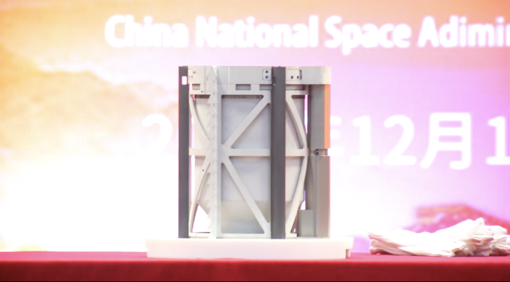
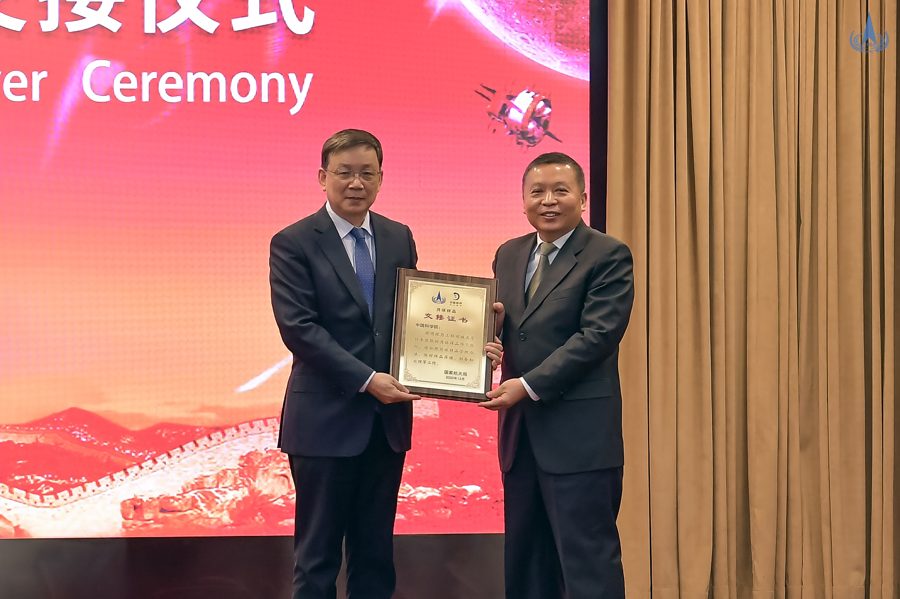

12月19日上午，国家航天局在京举行探月工程嫦娥五号任务月球样品交接仪式，与部分参研参试单位一道，共同见证样品移交至任务地面应用系统，标志着嫦娥五号任务由工程实施阶段正式转入科学研究新阶段，为我国首次地外天体样品储存、分析和研究工作拉开序幕。
 在交接仪式活动现场，国家航天局局长、探月工程总指挥张克俭向中国科学院院长侯建国移交了嫦娥五号样品容器，交接了样品证书。经初步测量，嫦娥五号任务采集月球样品约1731克。在样品安全运输至月球样品实验室后，地面应用系统的科研人员将按计划进行月球样品的存储、制备和处理，启动科研工作。
国家航天局后续将公开发布嫦娥五号任务月球样品管理办法和相关管理政策，组织样品管理工作、协调推进样品科学研究，鼓励国内外更多科学家参与，力争获得更多科学成果，同时开展任务相关公众科普和文化交流。
11月24日，嫦娥五号探测器发射入轨，经历地月转移、近月制动、两两分离、平稳落月、钻表取样、月面起飞、交会对接及样品转移、环月等待、月地转移、再入回收等阶段，在轨工作23天后，返回器携带月球样品于12月17日在内蒙古四子王旗预定区域着陆，任务取得圆满成功。此后，嫦娥五号返回器安全运抵北京，完成了开舱及相关处理工作，科技人员顺利取出了月球样品容器。